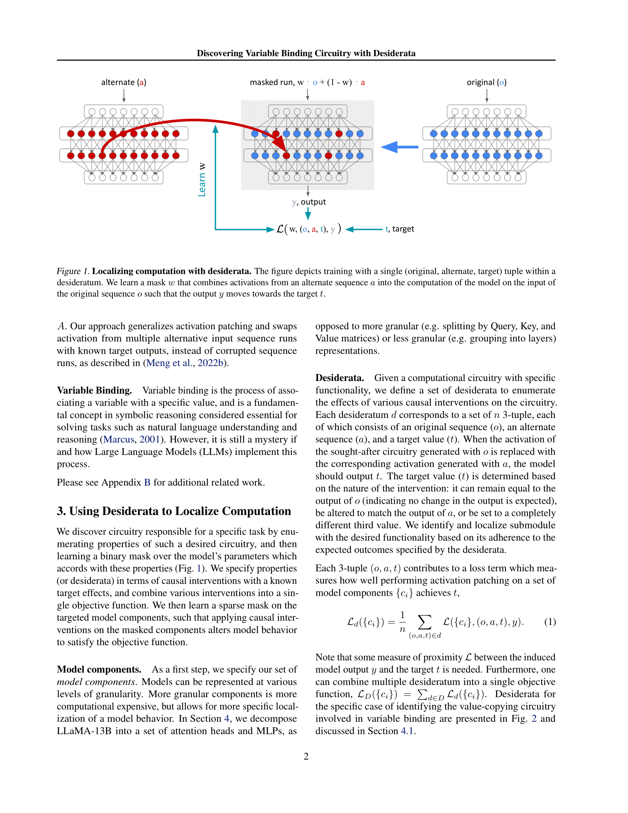

ArXiv
Preprint

Source Code
Github

Fine-Tuned
Model Weights

Huggingface
Demo
How to locate causal model components quickly?
Some discussion of previous research and what problem this research addresses.
In this paper, we propose a method for locating causal model components by optimizing over an intervention. Given just a small data set exercising the circuits to be probed, say something here.

Why use desiderata to locate model components?
Something about efficiency of optimization.
How to locate model components using a test set?
Some thing here.

How to cite
The preprint can be cited as follows.
bibliography
Xander Davies, Max Nadeau, Nikhil Prakash, Tamar Rott Shaham, David Bau.
Discovering Variable Binding Circuitry with Desiderata." arXiv preprint
bibtex
@article{davies2023discovering,
title={Discovering Variable Binding Circuitry with Desiderata},
author={Davies, Xander and Max Nadeau and Nikhil Prakash and Tamar Rott Shaham and David Bau},
journal={arXiv preprint arXiv:2307.03637},
year={2023}
}